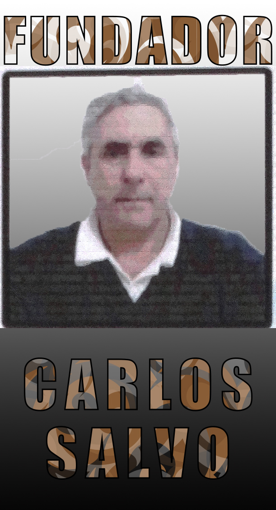
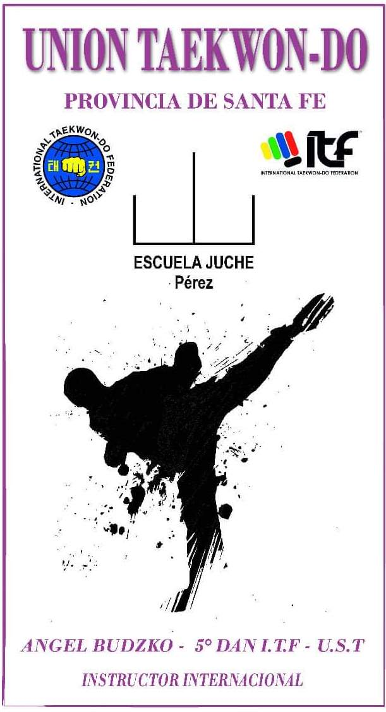

Historia de Nuestra Escuela
La escuela Juche, se inicia en 1972 con el Maestro Carlos Salvo en la Ciudad de Perez.
Años después, comienza a expandirse a las ciudades aledañas, Rosario, Casilda, Zavalla. Zonas que al día de hoy siguen vigentes. Zavalla y Perez están a cargo del Sabon Ángel Budzko, Vº Dan, quien se iniciara en la escuela en año ‘82. La escuela prioriza por sobre todas las enseñanzas, la transmisión de valores, principios y técnicas básicas.
Principios del Taekwon-do:
Cortesía - Integridad - Perseverancia - Autocontrol - Espíritu Indomable

